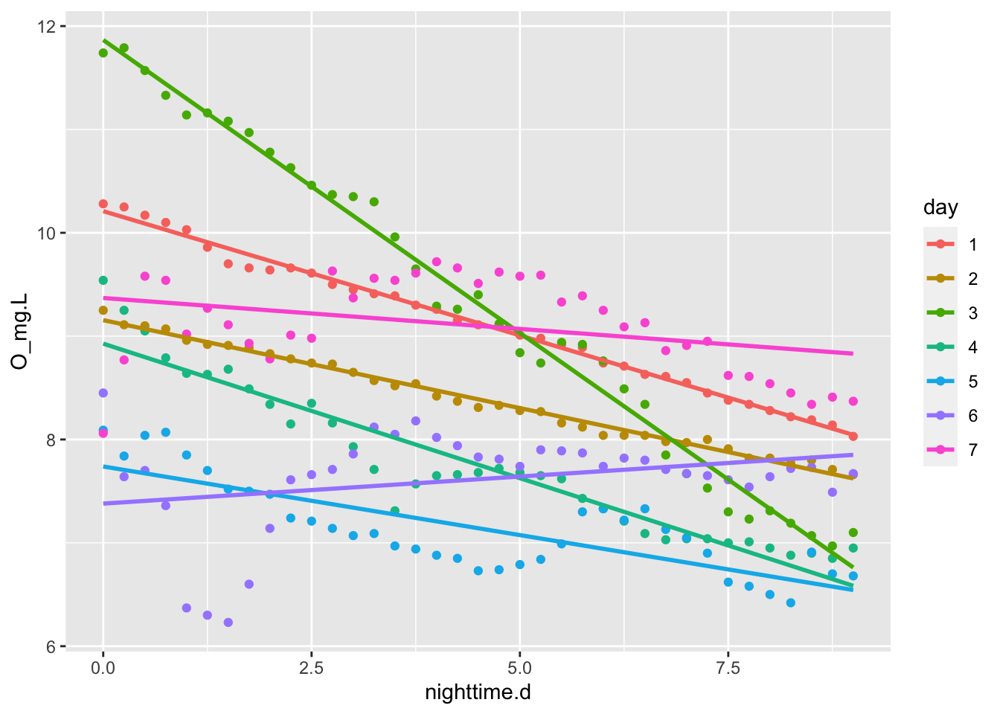

4 Lake Metabolism
In this chapter, you’ll study how lakes breath. You’ll get real data from Acton Lake, look it, and measure the rate of an inhale and an exhale. You’ll do that by hand, by hand with a spreadsheet, by hand with R, and finally using an R package, LakeMetabolizer, which is designed to do that and much more.

Figure 4.1: We can use lake oxygen level to measure net ecosystem production.
4.1 Estimating Productivity
Most cells respire to do the work of growth and maintenance by consuming oxygen and using it as the final electron acceptor when O\(_2\) is reduced, creating water. Because individuals comprise cells, and ecosystems comprise individuals, ecosystems respire too, and we can measure their metabolic rate using oxygen consumption and production.
We measure whole ecosystem metabolic rate as net ecosystem productivity which is the difference between gross primary productivity and respiration. Putting all of this in the same units of oxygen allows us to measure the rate, \[NEP = GPP - R\] If we assume that water column oxygen is correlated with the rates of photosynthesis, respiration, and net primary production, then we can think of the slopes of oxygen concentration vs. time as rates of respiration and net primary production. If we assume that respiration is constant throughout the 24 h cycle, we calculate GPP as the sum of NEP and R.
4.2 By hand, in R
Let’s practice R by importing, wrangling, and graphing data, then calculating slopes and estimating respiration, NPP, and GPP.
Start by obtaining data for Acton Lake (acton.csv). Place it inside a folder labelled ‘data’ inside your working directory. Here you read in data and check whether it loaded properly.
## Either change the path name in this function, or
## make sure you have a folder named 'data' inside your working directory
acton <- read_csv("data/acton.csv",
## tell R the format of one of your variables
col_types = cols(date_time =
col_datetime(format = "%m/%d/%y %H:%M")),
skip = 1# skips the first line of metadata
)
summary(acton)## date_time cum_h O_mg.L
## Min. :2013-06-27 06:15:00 Min. : 0.00 Min. : 4.530
## 1st Qu.:2013-06-29 00:11:15 1st Qu.: 41.94 1st Qu.: 7.640
## Median :2013-06-30 18:07:30 Median : 83.88 Median : 8.365
## Mean :2013-06-30 18:07:30 Mean : 83.88 Mean : 8.607
## 3rd Qu.:2013-07-02 12:03:45 3rd Qu.:125.81 3rd Qu.: 9.582
## Max. :2013-07-04 06:00:00 Max. :167.75 Max. :12.700
## O_perc temp
## Min. : 56.3 Min. :24.60
## 1st Qu.: 96.4 1st Qu.:25.00
## Median :107.6 Median :26.10
## Mean :110.5 Mean :26.12
## 3rd Qu.:123.2 3rd Qu.:27.10
## Max. :167.1 Max. :28.10Let’s check our understanding of lake oxygen dynamics by plotting the time series. Ggplot understands what to do with dates.
ggplot(acton, aes(x=date_time, y=O_mg.L)) + geom_path() 
Figure 4.2: *Oxygen dynamics from Acton Lake.
If we want to calculate the slope of the night time oxygen concentration, then we should identify what the endpoints of “day time” are so that we can do analyses on just daylight or nighttime data.
Working with times in R is a little tricky, because times and dates, periods, durations, and intervals are inherently tricky. The date_time variable in the original data set contains all the information, and we extra tidbits from it.
# determine day/night intervals
## Sunrise
morning <- 6.25
## sunset
evening <- 21
acton <- mutate(acton,
## dates, as factors.
date = as.factor( format(date_time, "%Y-%m-%d", tz="America/New_York") ),
## hour in decimal format
hour.d = as.integer( format(date_time, "%H")) +
as.numeric(format(date_time, "%M"))/60,
## just the daylight hours
daytime.d =
ifelse(hour.d >= morning & hour.d < evening,
hour.d - morning, NA),
## just the nighttime hours
nighttime.d =
ifelse( hour.d >= evening, hour.d-evening,
ifelse(hour.d < morning,
24 - evening + hour.d, NA)),
## an indicator of whether it is day or night
daylight = as.factor(
ifelse(hour.d >= morning & hour.d < evening, "day", "night"))
)
## identify different day/night cycles, one cycle = one day
## first measurement of the day
( first <- which(acton$hour.d==6.25) )## [1] 1 97 193 289 385 481 577## day 1 is in rows 1-96, day 2 is in rows 97-192, etc.
( rows.per.day <- diff(first) )## [1] 96 96 96 96 96 96## there are 96 observations of each cycle
## make a new categorical variable, day
acton <- acton %>%
mutate(day=as.factor( rep(1:7, each=96)))The slope of oxygen concentration at night is respiration, \(R\). The slope of the oxygen concentration during the day is gross primary production minus respiration, or net ecosystem production.
We will pull out one day’s worth of data and make a quick plot of the time series.
acton2 <- filter(acton, day=="1")
## or
# library(lubridate)
# acton2 <- filter(acton,
# date_time >=ymd_hms("2013-06-27 06:15:00") &
# date_time <= ymd_hms("2013-06-28 06:00:00") )
qplot(x = date_time, y=O_mg.L, data=acton2, geom = "path")
The nighttime slope is the regression line for just the nighttime data
# select the data frame, filter for 'date' values within a range of dates
names(acton2)## [1] "date_time" "cum_h" "O_mg.L" "O_perc" "temp"
## [6] "date" "hour.d" "daytime.d" "nighttime.d" "daylight"
## [11] "day"night.R <- lm(O_mg.L ~ nighttime.d, data=acton2)
## intercept and slope of nighttime regression
coef(night.R)## (Intercept) nighttime.d
## 10.2093741 -0.2405216day.NEP <- lm(O_mg.L ~ daytime.d, data=acton2)
## intercept and slope of daytime regression
coef(day.NEP)## (Intercept) daytime.d
## 7.447288 0.294097To calculate time-averaged, 24 hour NEP, we assume that all GPP occurred during the day, and respiration is constant. Our day is 14 h 45 min, or 14.75.
## as.numeric() drops the name of the slope we used
R24 <- as.numeric( abs( coef(night.R)[2] ) )
NEP24 <- as.numeric( coef(day.NEP)[2] * 14.75/24 )
GPP24 <- NEP24 + R24
R24; NEP24; GPP24## [1] 0.2405216## [1] 0.1807471## [1] 0.4212687These units are mg O\(_2\) / L / h.
Here is what every night looks like.
nights <- filter(acton, daylight=="night")
ggplot(nights, aes(x=nighttime.d, y=O_mg.L, colour=day)) +
geom_point() + # plot points
geom_smooth(method="lm", se=FALSE) # fit linear models each night
We can calculate the average slope for all nights, forcing a straight line through each night’s data. The estimates of uncertainty and the P values won’t make sense because the data are horribly autocorrelated, but we can rely on the estimates of the coefficients, and the average slope, in particular.
ntd <- acton$nighttime.d/24
m.resp <- lm(O_mg.L ~ nighttime.d + day, data=acton)
night.O2.rate <- coef(m.resp)["nighttime.d"]
night.O2.rate ## nighttime.d
## -0.1969112The estimate for night.d, -0.197, is our estimate of the respiration rate in mg_O\(_2\)/L per hour. We usually report this per day, which would just be 24 times as great.
Here is what each day looks like. Recall the at daytime oxygen increase is GPP-R or NEP.
days <- filter(acton, daylight=="day")
ggplot(days, aes(x=daytime.d, y=O_mg.L, colour=day)) +
geom_point() + # plot points
geom_smooth(method="lm", se=FALSE) # fit linear models each nightIf we want to, we could throw out the days that have negative slopes, that is, days 6 and 7.
acton3 <- filter(acton, !(day == 6 | day == 7) ) # NOT day 6 OR 7
md.resp <- lm(O_mg.L ~ daytime.d + day, data=acton3)
NEP.day <- coef(md.resp)["daytime.d"]
NEP.day## daytime.d
## 0.2464898To get 24 hour NEP, we have to weight daytime and nighttime GPP by the daylength. We stipulated that our morning began at 6:15 AM and ended at 9 PM, or a day time of 14 h 45 min, or about 61% of the 24 h cycle. Also, remember that respiration is positive, even though we are measuring it with a negative slope.
NEP24 <- as.numeric( NEP.day * 14.75/24 )
R24 <- as.numeric( abs( night.O2.rate ) )
GPP24 <- NEP24 + R24 # as.numeric drops the element name
GPP24## [1] 0.3483997Recall these are units of mg O\(_2\) / L / h. For units per day, we have
c(GPP24, NEP24, R24) * 24## [1] 8.361593 3.635724 4.7258694.3 The LakeMetabolizer package
Here we do something similar but in a much more sophisticated way. To estimate the net ecosystem productivity, we need to know, at least, gas exchange rates, equilibrium oxygen saturation, the mixing depth, and the daylight hours.
The metab function in LakeMetabolizer calculates GPP, R, and NEP given requisite data. The function can use several different approaches, depending upon what data you have and your quantitative preferences. Here we use the simplest approach, which the authors refer to as simple bookkeeping. First we load the package and then examine the help page for metab.bookkeep.
# install.packages("LakeMetabolizer", dep=TRUE)
library(LakeMetabolizer)
?metab.bookkeepOn the help page you learn about how to use this function. Here we walk through the steps for acquiring or making educated guesses about the data we need.
Here we acknowledge that the change in dissolved oxygen is a function of NEP and also the flux of oxygen due to diffusion, \[\Delta \mathrm{DO} = \mathrm{NEP}_{t-1} \cdot \Delta t + F_{t-1}\] where \(F_{t-1}\) is the flux of oxygen due to diffusion (Winslow et al. 2016). This rate of diffusion depends on wind speed, temperature, lake size, and, ultimately, how much the of the lake waters mix (Winslow et al. 2016). Here we will simply provide a value for the gas exchange constant and a mixing depth.
From its calculations, LakeMetabolizer can give us NEP, R, and GPP. This is because average respiration is the average difference between DO and \(F\), and NEP is the difference between GPP and R.
## pick a reasonable gas exchange constant and mixing depth
k.gas <- 0.4
z.mix <- 1 # one meter
## code day and night with ones and zeroes
irr <- with(acton,{ifelse(daylight=="day", 1,0)})
## estimate dissolved oxygen at saturation (equilibrium)
## using the function, o2.at.sat.base()
acton <- acton %>% mutate(
do.sat=o2.at.sat.base(temp)
)
## create a data frame with just the variables we want.
acton.LM <- acton %>% # select data frame
mutate(z.mix = z.mix, k.gas = k.gas, irr=irr ) %>% # add 3 variables
## select only some of the columns
select(datetime=date_time,
do.obs=O_mg.L, do.sat=do.sat,
k.gas=k.gas, z.mix=z.mix, irr=irr) %>%
as.data.frame() # simplify the data structure (class tbl_df screws things up)Finally, we use metab(method="bookkeep") to estimate GPP, R, and NEP.
## calculate GPP, R, NEP in mg O2 / L / day
out <- metab(acton.LM, method="bookkeep")## [1] "Points removed due to incomplete day or duplicated time step: 96"
## [1] "NA's added to fill in time series: 0"out## year doy GPP R NEP
## 1 2013 179 6.345054 -4.786770 -0.2392476
## 2 2013 180 10.741236 -6.051379 2.4460696
## 3 2013 181 16.144515 -13.116955 -1.9112065
## 4 2013 182 6.824456 -5.527167 -0.7835609
## 5 2013 183 5.421310 -3.849978 0.1289339
## 6 2013 184 -4.466201 4.411346 1.6162349How does this compare with our previous estimate? What would happen if our gas exchange constant differs (Cole et al. 2010)?